Example 1 · Visual Search
U
You
宮崎駿 (Hayao Miyazaki, Japanese animation director) sitting at his animation desk in Studio Ghibli, surrounded by hand-drawn sketches and watercolor palettes, warm afternoon light streaming through the window.
S
Thinking: Analyzing User Request·····
⚠️
Entity Knowledge Gap: "宮崎駿 (Hayao Miyazaki)"
World-famous director, but generators frequently hallucinate his appearance — producing a generic elderly Japanese man instead of his distinctive features (white hair, round glasses, white beard, apron). Image search required.
Tool: Image Search
3.4s
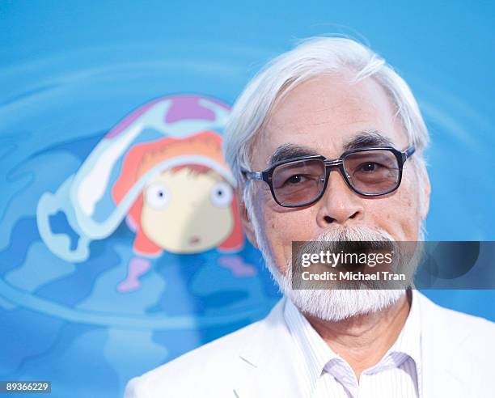
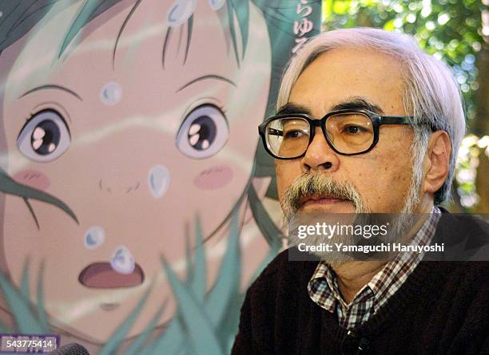
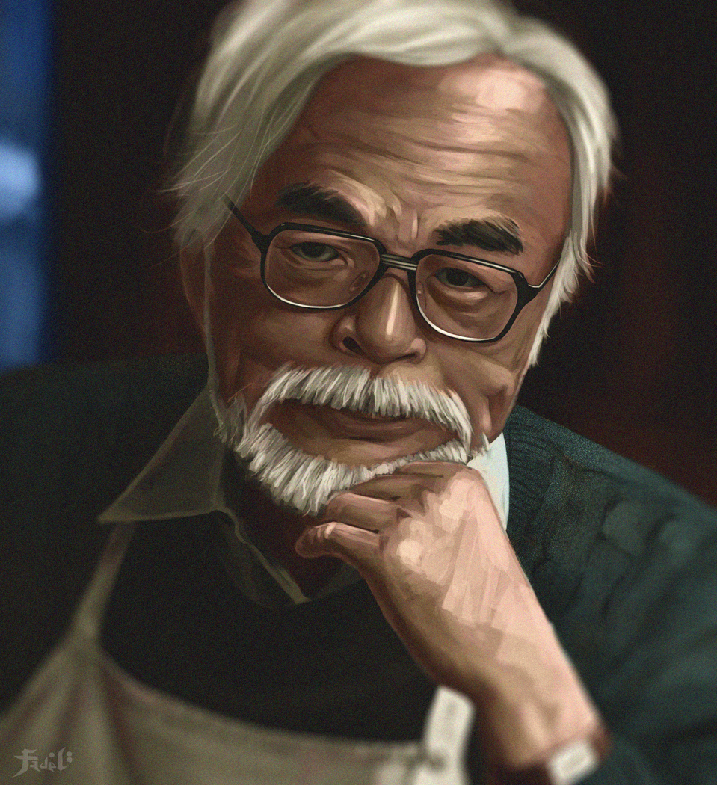
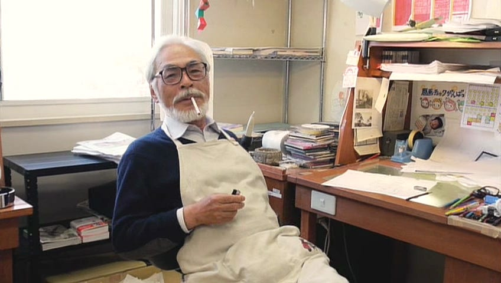
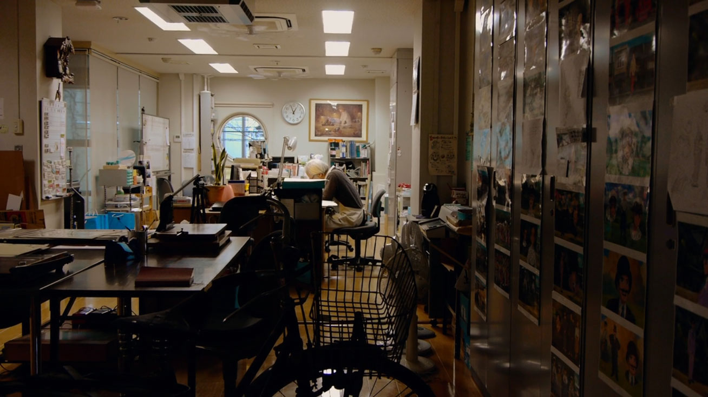
Thinking: Selecting Best Reference·····
📌
Selected: Image 1 (portrait)
Best facial reference — Miyazaki's thick round glasses, full white beard, and white hair are clearly visible. Directly grounds the critical EIK gap.
Thinking: Integrating Visual Reference with Prompt·····
Refined prompt ready — facial features, clothing, and desk environment extracted from reference images
1 visual reference loaded — Miyazaki portrait (index 0) conditioned for facial accuracy
Tool: Image Generator
28.8s
Mode: I2I — reference photo conditions the generation for facial accuracy
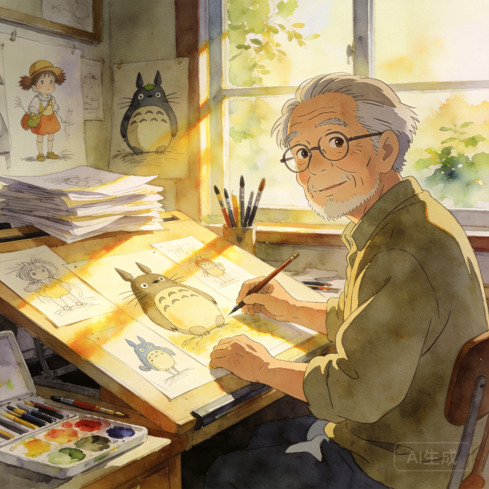
Without Search
With Visual Search
↑+1.9— the model saw what the director actually looks like
Example 2 · No Search Needed
U
You
A modern city skyline reimagined in Vincent van Gogh's Starry Night style — swirling cobalt sky, thick impasto brushstrokes, glowing yellow street lights reflected in a river below.
S
Thinking: Analyzing User Request·····
✓
All gaps below search threshold
2 gaps identified (Starry Night visual style, impasto technique) — both rated moderate severity. All elements are core training data. Search skipped.
Search skipped — "Starry Night" style is core training knowledge for all image generators
Thinking: Composing Prompt from Common Knowledge·····
Refined prompt ready — composed from model's inherent knowledge of Starry Night visual language
Tool: Image Generator
12.1s
Mode: T2I — direct generation, no references needed, zero search overhead
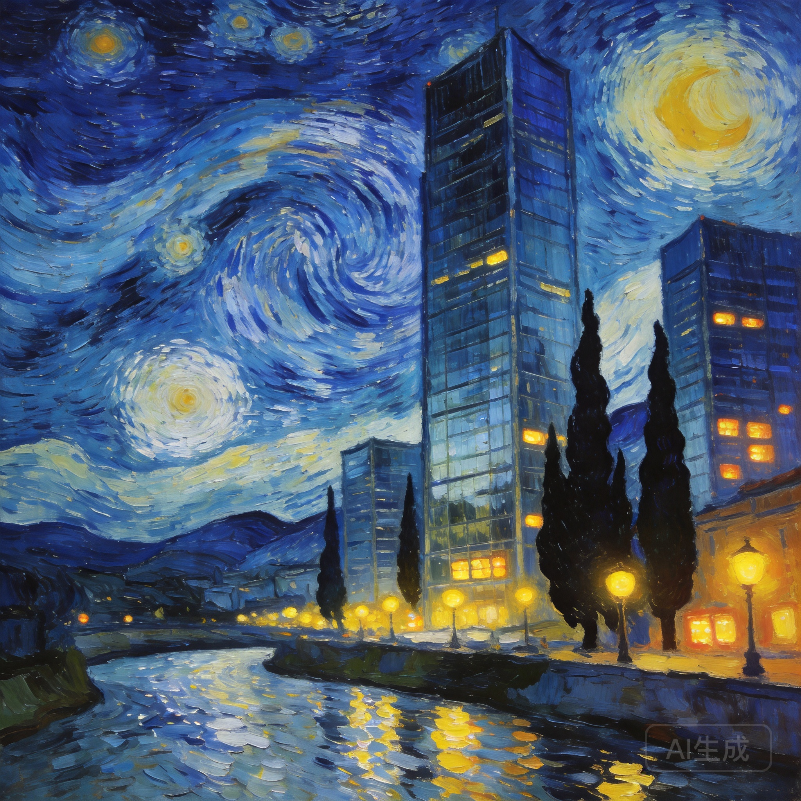
Generated Image
0Search calls
0sExtra latency
When the model already knows enough, the smartest move is to step aside.
Example 3 · Image + Text Search
U
You
A labeled diagram of the CRISPR-Cas9 gene editing mechanism showing guide RNA binding, PAM site recognition, and double-strand DNA break — annotated with correct molecular component names.
S
Thinking: Analyzing User Request·····
⚠️
Factual Knowledge Gap: Molecular Component Names
CRISPR-Cas9 labels (sgRNA, tracrRNA, crRNA, PAM sequence, RuvC/HNH nuclease domains) must be spelled correctly and placed accurately. Models hallucinate these. Text + image search required.
Tool: Image Search
3.1s
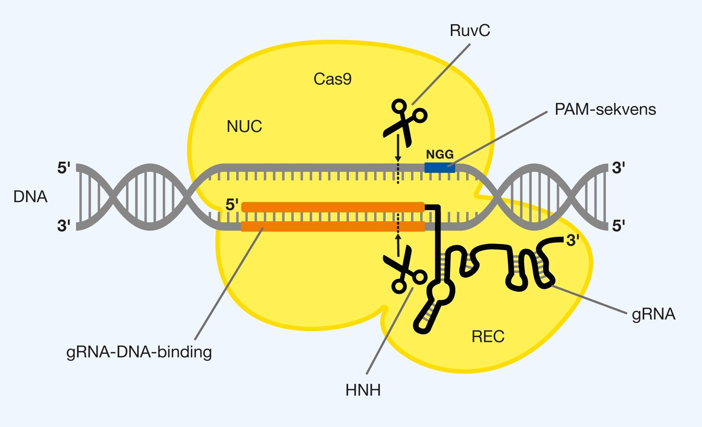
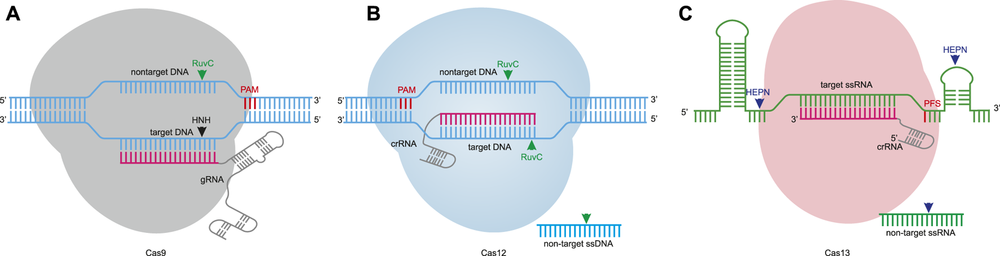

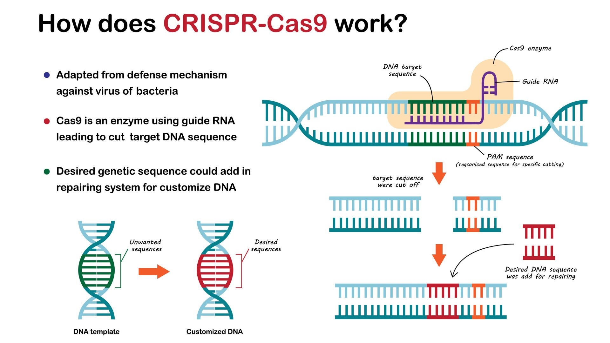
Tool: Web Search
2.4s
The CRISPR-Cas9 system uses a single guide RNA (sgRNA) — a fusion of crRNA and tracrRNA — to direct the Cas9 endonuclease to a target DNA sequence adjacent to a PAM (5'-NGG-3') motif. Cas9 unwinds the DNA and its RuvC and HNH nuclease domains each cleave one strand, creating a double-strand break (DSB) 3bp upstream of the PAM.
Thinking: Integrating Multimodal Search Results·····
✦
Prompt enriched with multimodal knowledge
Visual layout from diagram references + factual labels (sgRNA, PAM, RuvC, HNH, DSB) from web search → injected into generation prompt.
Visual references ready — 2 CRISPR diagrams loaded as layout guides
Tool: Image Generator
46.8s
Mode: I2I + Text — diagram layout from image refs, labels from web search
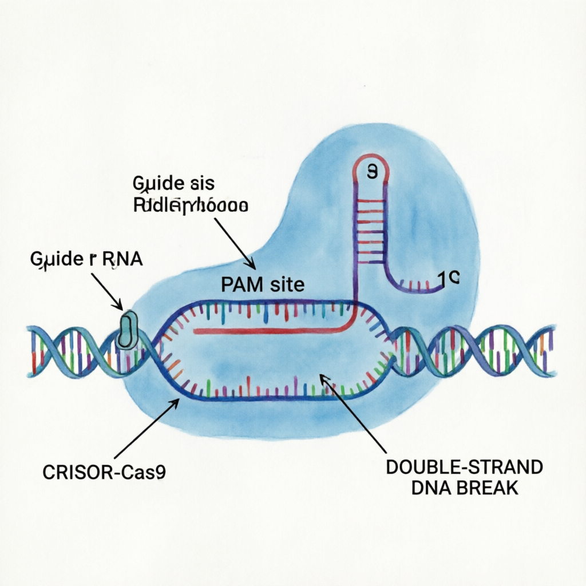
Without Search
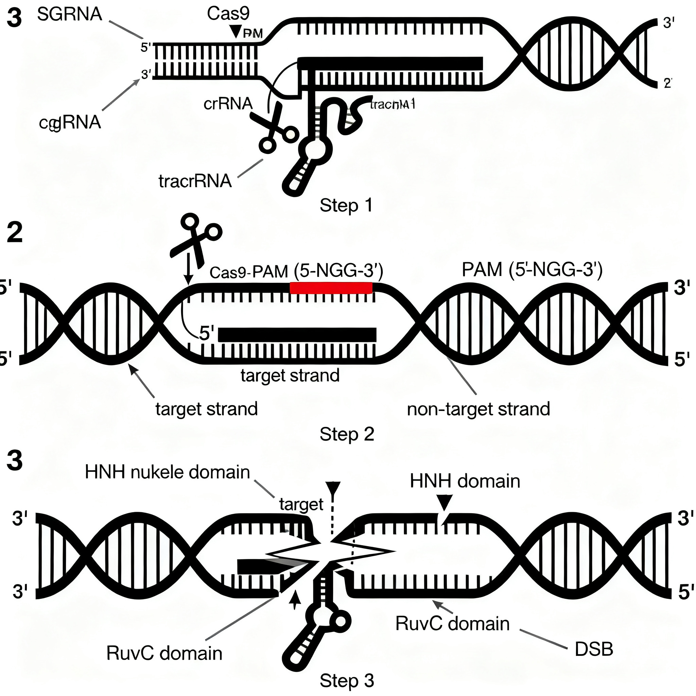
With Image + Text Search
↑4× improvement— search fixed the labels and the molecular facts